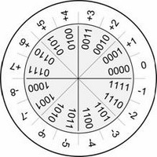

Séquence 2
II. Les entiers relatifs
TD
A. Une première approche...
Pour représenter des entiers relatifs en machine, on peut tout d'abord penser qu'un bit peut être réservé au signe : par exemple le premier bit d'un entier codé sur 4 bits sera à 1 si c'est un entier négatif, à 0 si c'est un entier positif.
\(0010_2\) représenterait alors \(2_{10}\), et \(1010_2\) représenterait \(-2_{10}\).
-
Quels seraient les nombres minimal et maximal qui pourraient être représentés ?
-
Quel nombre aurait 2 représentations ?
-
Que ferait l'addition de \(0101_2\) (\(5_{10}\)) et \(1011_2\) (\(-3_{10}\)) ?
B. Le complément à 2 puissance n

On propose de coder les entiers sur 4 bits avec la méthode décrite sur le schéma ci-contre.
- Les calculs suivants sont-ils corrects ? Compléter le calcul avec les résultats et les conversions (ne pas compter l'overflow pour l'addition binaire !).
| Binaire | Décimal | Binaire | Décimal |
|---|---|---|---|
| \(0101_2\) | \(5_{10}\) | \(0011_2\) | |
| \(+1101_2\) | \(-3_{10}\) | \(+1001_2\) | |
- Ce codage ne sort pas de nulle part : il s'agit de ce que l'on appelle de la méthode du complément à \(2^n\).
Méthode du complément à \(2^n\) (complément à 2) - Pour représenter un entier positif sur \(n\) bits, on prend sa représentation binaire en ajoutant autant de 0 que nécessaire devant pour avoir au total \(n\) bits. - Pour représenter un entier négatif \(-m\) sur \(n\) bits :
- On code en binaire l'entier positif \(m\),
- On inverse tous les bits (on prend le complément à 1),
- On additionne l'entier 1 au nombre obtenu. Si l'addition dépasse \(n\) bits, on ne conserve pas le bit supplémentaire ("overflow").
Exemple : Représenter -6 sur 4 bits.
| Entier 6 en binaire | 0110 |
| Complément à 1 | 1001 |
| Addition de 1 | + 0001 |
| Complément à \(2^4\) | 1010 |
Vérifier avec le schéma à quoi correspond la solution trouvée.
- Utiliser la méthode du complément à 2 pour représenter :
- \(-6_{10}\) sur 8 bits,
| Entier 6 en binaire | |
| Complément à 1 | |
| Addition de 1 | |
| Complément à \(2^8\) |
- \(-68_{10}\) sur 8 bits.
| Entier 68 en binaire | |
| Complément à 1 | |
| Addition de 1 | |
| Complément à \(2^8\) |
- Faire l'addition de \(-5_{10}\) et \(5_{10}\) en binaire sur 4 bits (ne pas oublier de ne pas conserver l'"overflow").
- Calculer le complément à \(2^4\) de \(-5_{10}\). En déduire comment obtenir la valeur décimale d'un entier négatif codé avec le complément à 2.
- En déduire la valeur décimale de l'entier représenté sur 4 bits par \(1110_2\).
Cours
Plusieurs méthodes existent pour représenter les entiers relatifs, dit aussi signés (non-signés pour les entiers positifs). La méthode du complément à \(2^n\) permet de faire des opérations directement.
A. La méthode
La méthode du complément à \(2^n\) du TD est à connaître.
-
Le nombre de bits utilisés pour cette représentation doit toujours être précisé : 8, 16, 32, 64 bits sont des tailles couramment utilisées.
-
Le bit le plus à gauche représente le signe : il vaut 1 si l'entier est négatif, 0 s'il est positif. Par rapport aux entiers non-signés, il faut donc compter un bit supplémentaire pour le signe lorsque l'on évalue le nombre de bits nécessaire à la représentation du nombre.
B. Les entiers représentables
-
Le nombre maximal représentable sur 4 bits avec cette méthode est \(0111\). Quelle est sa valeur en décimal ? L'exprimer en fonction du nombre de bits utilisé \(n\).
Sa valeur est de 7, soit \(2^{n-1}-1\). -
De la même manière, donner le nombre maximal représentable sur 8 bits, en écriture binaire et décimale.
Ce nombre est 01111111, soit 127. -
Le nombre minimal représentable sur 4 bits est \(1000\). Quelle est sa valeur en décimal ? L'exprimer en fonction de \(n\).
Ce nombre est -8, soit \(2^{n-1}\).
Conclusion : Les valeurs pouvant être représentées avec cette méthode vont donc de \(-2^{n-1}\) à \(2^{n-1}-1\).